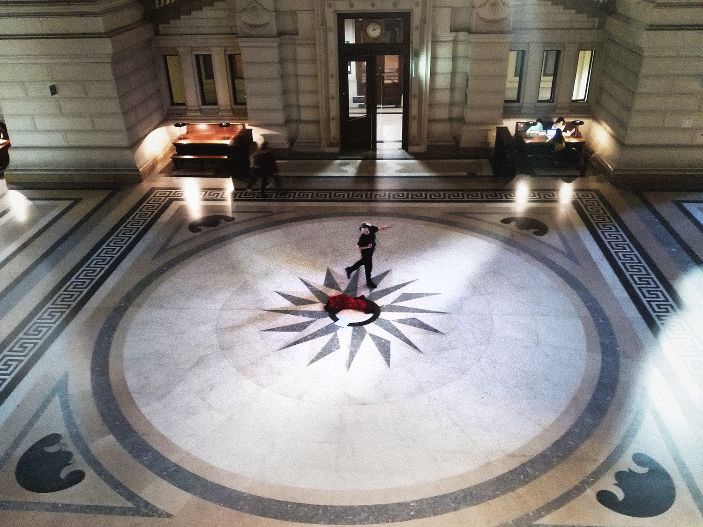
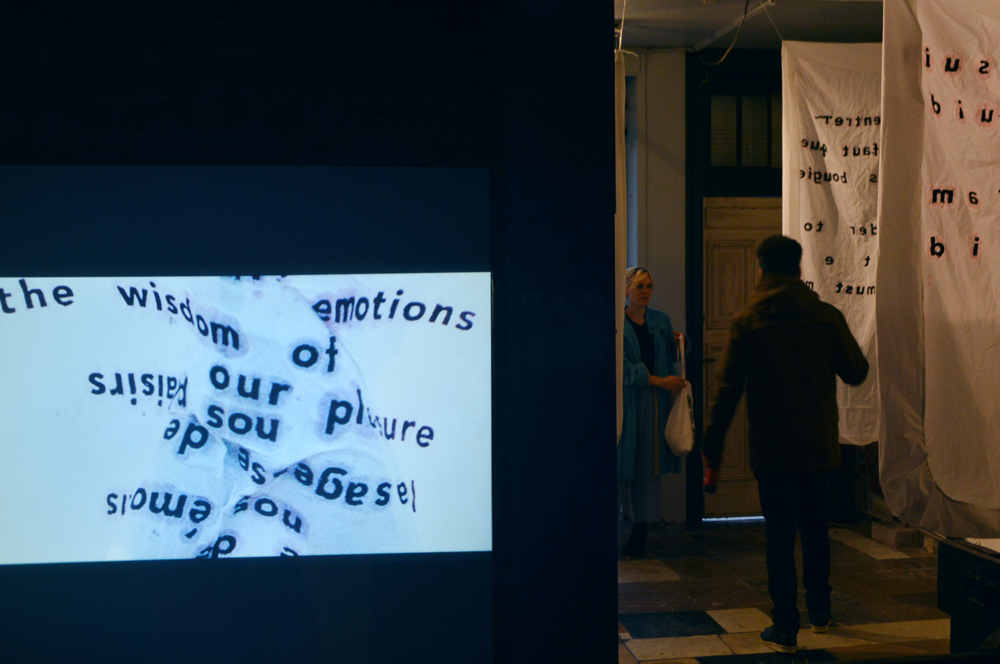
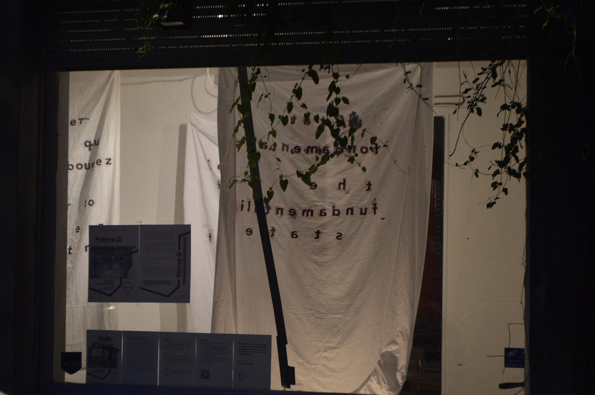
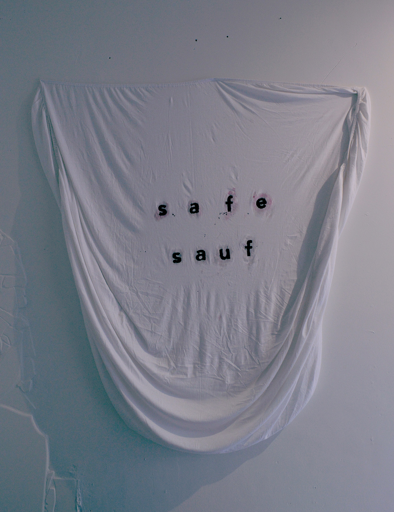
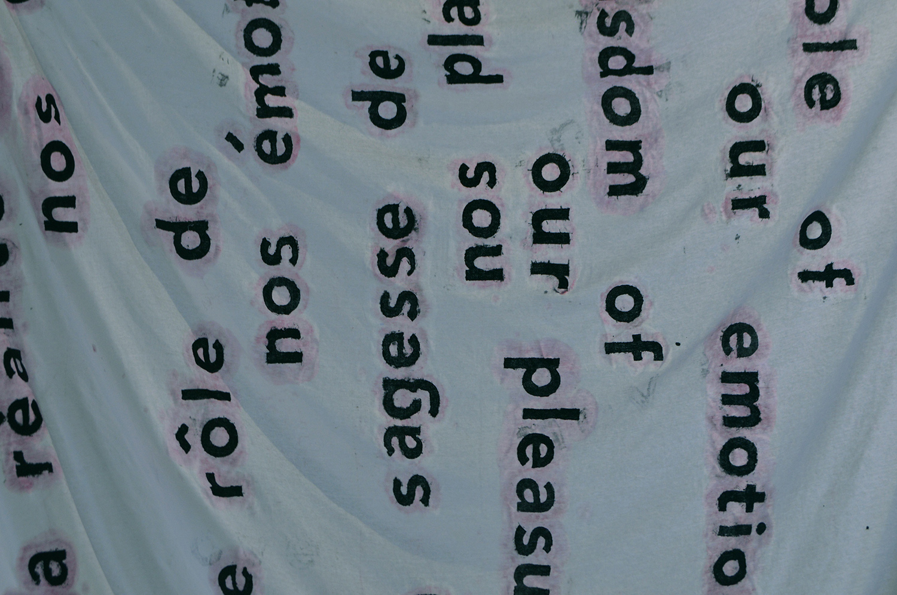
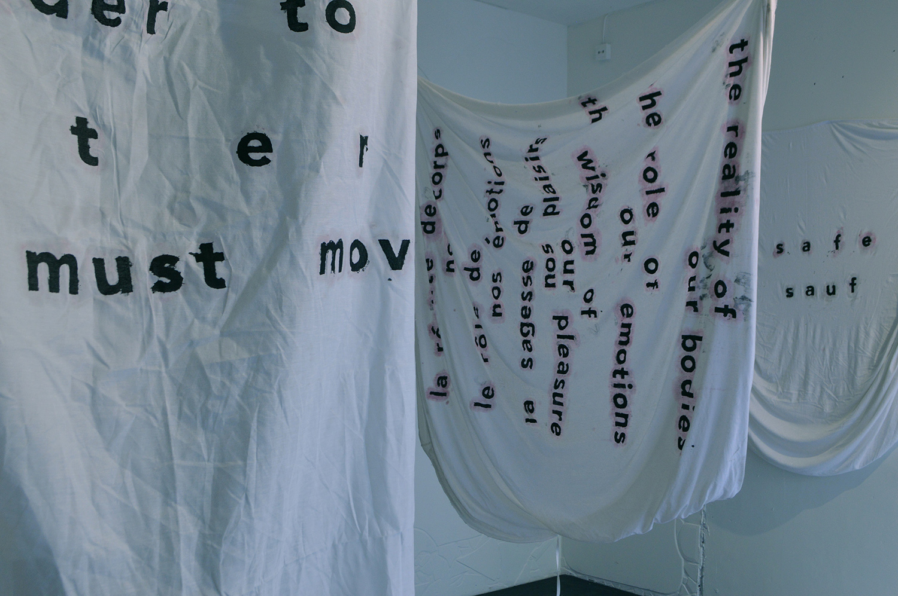

Residence of Reflection #2 - artist talk and exhibition
April 27th, 2019
[PDF version]

Patrice Qi is a Rotterdam-based conceptual artist, participating in the second edition of the Residence of Reflection. Patrice comes for a month-long research work about the Palais de Justice in Brussels, its topology within the neighborhood of Marolles, its justificative voluminosity, its textual embodiments, its lost voices and footsteps, and its queerness.
- April 27th at 16h we meet at the front of Palais de Justice with Patrice driving us trough her reflection, as a research-specific artist talk.
- April 27th at 19h we meet at Hectolitre's Trait d'Union for a vernissage presenting Patrice's textual sculptures and sound installation, as an output of the Residence of Reflection.
-
Interpellated Integument
No boasting no self-effacing here is my hand let’s feel our way through this like through a kiss
Working with language as sculpture is working in between the semantic and the symbolic. What we see and what we say are two different things because of the variety of understandings that we have constructed in and around ourselves – a concoction of taught and experienced meanings.
During my residency at Hectoliter—catalyseur d’échange—as I reflect and research the meaning(s) of justice in Les Marolles from a queer perspective, I have literally stumbled in a vacuum symbolized through justice’s landmark building in the neighborhood, the Palace of Justice. The building seems to find itself in a state of permanent fixation and is given just a rumble by the dozens of footsteps resonating between the huge pillars –hopelessly referred to as the "salle des pas perdus" [the hall of lost footsteps].
My journey is quite fragile because I am looking at mostly binary understandings of public and private life constructed in the neighboorhood and throughout history. The exhibition of this journey is Interpellated Integument, and refers at once to the necessity of layers and the social quality that queerness or fluidity has in our daily lives. Interpellated Integument is a sound-installation interpreting a queer understanding of justice with recordings of voices and regurgitations assembled in Les Marolles.
Space explorer
there is some circumference to the days, ideas about the slightest change
discussed with a pigeon on the roof – it has an antenna
for things I say and responds with clever coo’s and there
bounce our dead female friends, it is as though
you can still catch them this time: distance is falling
toward the middle – where the nose is placed
the shape of my own eyes remind me of maple keys, of the syrup
I never buy, of pancakes and their circumference;
big enough to eat three most of the time
and the arena inside which I live – it will always be
a projection onto each encounter a work in progress;
I think that is why some people explore space.
*Research text and poem by Patrice Qi, written during the Residence of Reflection at Hectolitre.
---
About the artist: Patrice Qi is a conceptual artist and poet exploring performance and audio-
installation. Writing as sculpture or multidisciplinary |dys|functionality lies at
the heart of her work. Website: https://pqi.hotglue.me/
-
Residence of Reflection is a one-month artist-in-residence programme dedicated to international research artist, curators and thinkers willing to work in Brussels. The residency seeks to reflect on challenges as for instance: How to connect parallel communities co-existing in a single neighborhood? What does it mean to create a memory of growing relations and exchanges? How to place an artist within a community and strengthen a collectivity within art?
-
Images: Mladen Bundalo




